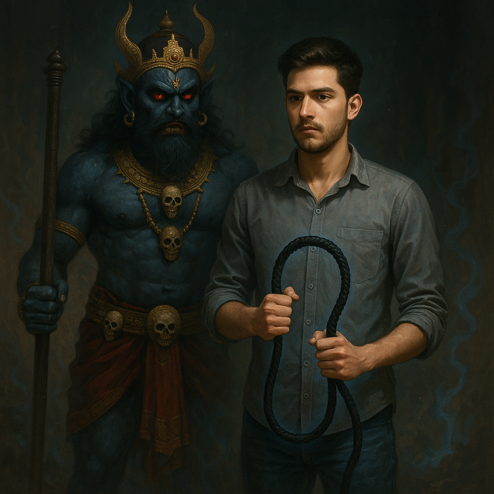

THIS WORLD IS STILL IN DEVELOPMENT
The next scene hasn’t been written yet.
Come back for the story. In the meantime, there are other worlds on the board.
Explore the story wall ↗SCENE 05 / THRILLER / IN DEVELOPMENT
Another idea. Another world to step into.
TAKE A LOOK ↓
From the story vaultTHIS WORLD IS STILL IN DEVELOPMENT
Come back for the story. In the meantime, there are other worlds on the board.
Explore the story wall ↗